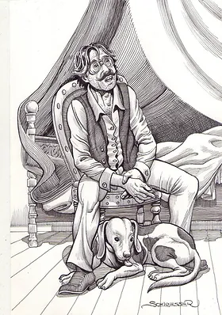
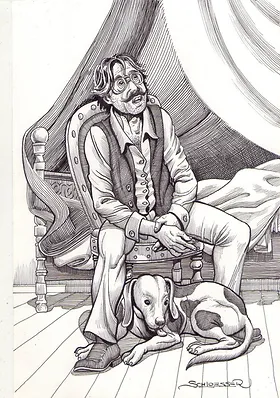

Quincas Borba
Filósofo e intelectual residente em Barbacena, interior de Minas Gerais. Quincas Borba desenvolveu e promoveu sua filosofia, o Humanismo, no Rio de Janeiro. Quincas se apaixonou por Maria da Piedade, irmã de Rubião. A menina morreu jovem, então os dois não tiveram chance de ter filhos. Ele acabou morrendo no Rio de Janeiro, e seu herdeiro escolhido, registrado em testamento, foi seu bom amigo Rubião, que esteve ao seu lado nos últimos meses antes de sua morte, com a única condição de que cuidasse de seu cachorro, também chamado Quincas Borba. Esse personagem já apareceu no romance "Memórias Póstumas de Brás Cubas". Resumindo, Quincas Borba tem as seguintes características: filósofo maluco, excêntrico, "mudanças de humor constantes", "impulsivo sem razão", "mansidão sem proporção", extravagância, gentileza, alegria, contra o pessimismo e seu desejo por isso ter uma qualidade "humorística", o humanismo, como evidencia sua filosofia "borbista", mantendo assim a continuidade através dos tempos e desejava a sua continuidade através dos tempos como comprova a sua filosofia “borbista”, de natureza “humorística”, o Humanitismo.
Quincas Borba (Cão)
Quincas Borba (o cão) teve esse nome dado pelo seu dono, também chamado Quincas Borba e, mais tarde, veio a ter outro dono: Rubião. Ao longo do livro, mostra-se amável e fiel com os seus dois donos. Ele é companheiro em todos os momentos e, nas mais diversas situações, dorme com seu mestre. Seu dono morreu, e ele acabou morrendo também. A atitude do cão faz Rubião pensar que recebeu a alma de um filósofo morto (Quincas Borba). A função do cão pode ser exibir "um conjunto de características de animais irracionais e a parte instintiva do homem; bestialidade e selvageria".
 
